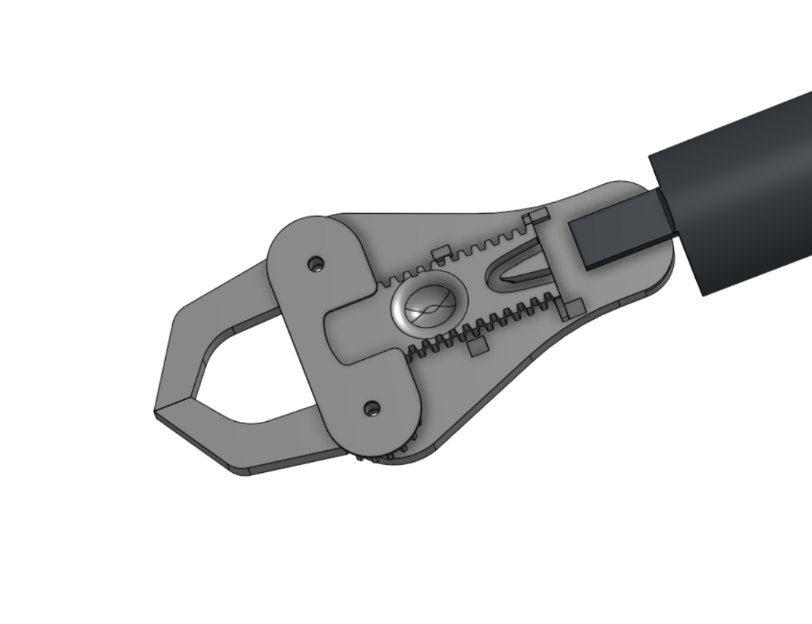
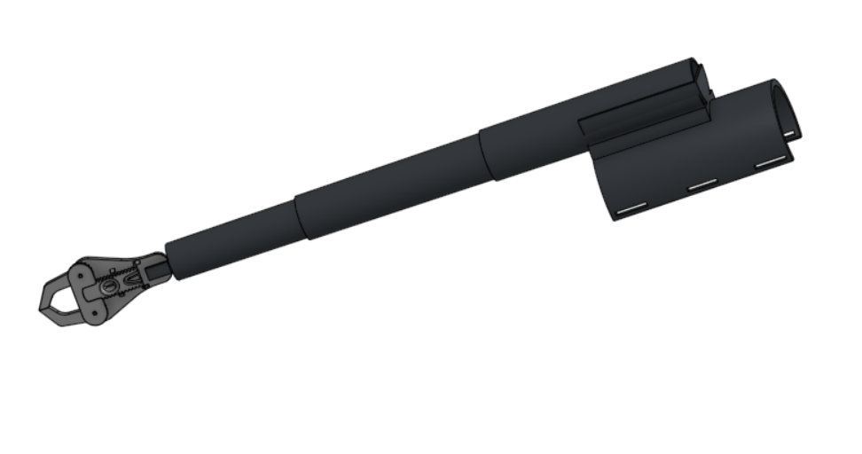
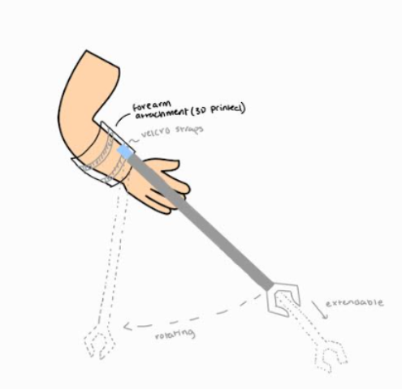
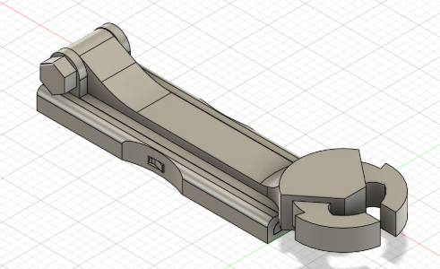
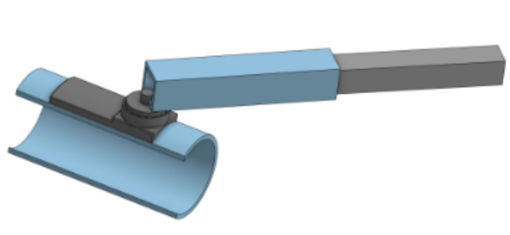

EnableTech · Led a 5-person engineering team
Assistive Grip Device
A 2-DOF, forearm-mounted grip-assist wearable that telescopes from 10 to 30 inches, co-designed with Tony to tie trash bags without using his hands. Device weight cut 40%.



The problem
Most assistive gripping devices assume some finger mobility, hand strength, or use of the whole arm. Our project partner, Tony, a UC Berkeley facilities worker, has limited mobility from his hand to his shoulder and no individual finger articulation, so existing solutions don’t work for him. We focused on one specific task from his job: tying trash bags. That needed a lightweight device that attaches to his forearm and grips the bag without his hand.
Research with Tony
We met with Tony directly to understand the mechanics of the trash-bag task and measured the exact reach the gadget needed: 30 inches extended to clear the bag, 10 inches retracted to stay out of his way. Getting to know his routine shaped the requirements. It had to be light enough to wear a full workday without fatigue, extend and retract on demand, and need no finger dexterity.
Design & iteration
Early work was hand-tracing and sketching: gripper shapes, a wrench-inspired claw concept, and forearm connectors. From there we moved through 5+ design iterations in SolidWorks, each printed and tested. The final version is a 2-DOF arm, a telescoping pole angled slightly outward from Tony’s forearm plus a gear-driven claw held closed by rubber-band tension. We secured it with Velcro and added grip pads to the jaw surface specifically for the trash bag, so it won’t slip while he works.

Prototypes
Each iteration was modeled in SolidWorks and 3D printed, so we could put real parts on Tony’s forearm and adjust from his feedback.


Results
Reduced device weight 40% across 5+ design iterations by replacing aluminum with PLA and optimizing CAD geometry and material thickness.